1. Introduction and Goals
1.1. Requirements Overview
1.1.1. Related to Gameplay
-
The system must allow users to play a complete match of the classic Game Y, following the official rules and supporting different board sizes.
-
The application must allow the user to select the difficulty level before starting a match.
-
The system must correctly detect the win condition and determine when a match has ended.
-
After the match finishes, the system must display an end-game summary screen including relevant statistics such as match duration, number of moves, difficulty level, and winner.
-
The application must allow users to view rankings, including local and global rankings.
-
The system must provide a tutorial or help section explaining the rules of Game Y and how to interact with the interface.
1.1.2. Related to the AI Service
-
The system must provide an AI opponent capable of generating valid moves according to the selected difficulty level.
-
The AI must always generate legal moves and must never violate the rules of Game Y.
1.1.3. Related to the Persistence Layer
-
The system must store user accounts and authentication data securely.
-
This service must store match results, including outcome, duration, difficulty, and player statistics.
1.1.4. Related to the Authentication System
-
The system must allow users to register or log in with valid credentials.
-
It also shall include an option to play as a Guest without requiring authentication.
1.2. Quality Goals
The top three (max five) quality goals for the architecture whose fulfillment is of highest importance to the major stakeholders. We really mean quality goals for the architecture. Don’t confuse them with project goals. They are not necessarily identical.
Consider this overview of potential topics (based upon the ISO 25010 standard):

You should know the quality goals of your most important stakeholders, since they will influence fundamental architectural decisions. Make sure to be very concrete about these qualities, avoid buzzwords. If you as an architect do not know how the quality of your work will be judged…
A table with quality goals and concrete scenarios, ordered by priorities
| Quality Goal | Description |
|---|---|
Functional Suitability |
The system shall correctly implement the classic version of Game Y, including win-condition verification for any supported board size. All user-facing features (play game, select strategy, view statistics) and API operations shall behave according to the specified requirements. |
Performance Efficiency |
For a standard match, the system shall return a computer move or API response within 1 second under normal load. The architecture shall support at least 20 concurrent players without noticeable degradation in responsiveness. |
Reliability |
The system shall consistently determine correct game outcomes and suggested moves, with an error rate of less than 1% in win detection or AI move generation. User data and match history shall not be lost during normal operation. |
Usability |
First-time users shall be able to start and complete a game without external help. The web interface shall clearly display the board state, available actions, and game status. The learning time for basic gameplay should be less than 30 minutes. |
Maintainability |
The architecture shall allow new AI strategies, difficulty levels, or Game Y variants to be added without major refactoring. Clear module boundaries and documented interfaces shall enable developers to modify or extend functionality efficiently. |
Security |
User accounts and personal data shall be protected through proper authentication and authorization mechanisms. API endpoints shall restrict access to authorized clients and prevent unauthorized manipulation of game or user data. |
1.3. Stakeholders
| Role/Name | Contact | Expectations |
|---|---|---|
Owner [Client] |
He is the main client of the system, for he enforces expected behaviors and has to be the most satisfied stakeholder. |
|
Dev Team |
They are the ones that implement and determine whether a problem may be solved given the constraints, being able to discuss with the client (Labra). |
|
Game Y rules |
Immutable rules that define the rules for playing the vanilla version of the game. Shall be followed. |
|
Final users |
There is no direct communication, though social media or polls may be useful |
They will be the main users of the system, they shall communicate errors and suggest improvements. The system shall be designed expecting them to use it. |
Server (Azure VM) |
20.250.145.156 |
Hosts all Dockerized services, providing public access to all users. |
Firebase (Google Cloud) |
Firestore + Firebase Auth |
A non-relational cloud database that stores all persistent information regarding users and games, and handles authentication. |
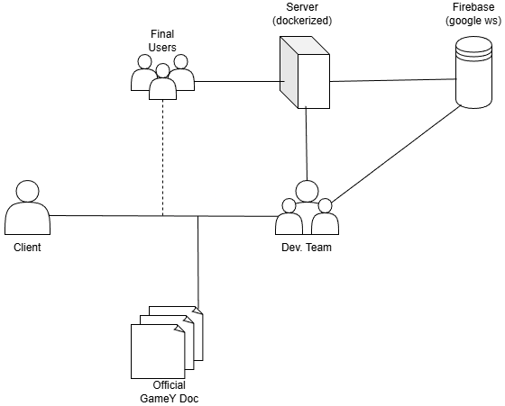
2. Architecture Constraints
2.1. Technical Constraints
| Constraint | Explanation |
|---|---|
Web application must be implemented in TypeScript/JavaScript |
The frontend and external API are required to be developed using TypeScript/JavaScript as specified in the assignment. |
Bot logic must be implemented in Rust |
The game engine responsible for move suggestion and win detection must be developed as a separate Rust module. |
Communication between subsystems via JSON using YEN notation |
The web application and the Rust service must exchange data using JSON messages following the YEN game notation defined in the assignment. |
Service-oriented architecture |
The Rust module must expose its functionality through a web service interface callable by the web application. |
Use of Firebase as the database |
User data, match history, and statistics must be stored in Firebase, as chosen by the team. |
Deployment on a cloud platform |
The system must be publicly accessible. The backend services will be deployed on a cloud provider (e.g., Vercel, Railway, or Azure). |
Public external API for bots |
The system must expose a documented API allowing external bots to access game data and play matches. |
Browser-based execution |
The frontend must run in standard modern web browsers without requiring special installations. |
2.2. Organizational Constraints
| Constraint | Explanation |
|---|---|
Assignment requirements define core functionality |
The system must implement at least the classic version of Game Y with player-vs-machine mode and variable board size. |
Public deployment required |
The application must be accessible through the web as part of the evaluation criteria. |
Documentation must follow arc42 |
Architecture documentation must comply with the arc42 structure provided by the course. |
Quality requirements for evaluation |
The project must include testing (unit, integration, and e2e), CI/CD, monitoring, and proper repository management. |
Team-based academic project |
Decisions must consider limited time, resources, and team size typical of a university assignment. |
2.3. Conventions and Standards
| Constraint | Explanation |
|---|---|
Use of YEN notation for game state |
All game states exchanged between components must follow the defined YEN notation format. |
REST-style API with JSON |
All external and internal services will communicate using JSON over HTTP. |
Version control with Git |
All source code and documentation will be managed using a Git repository. |
Code quality and testing practices |
The project must include automated tests and follow agreed coding standards. |
3. Context and Scope
3.1. Business Context
The following table includes the different business components of the application, explaining for each their points of interaction with the rest of the system.
| Element | Description | Inputs | Outputs |
|---|---|---|---|
Player |
Takes part in the game, is able to create a user in the application and launch a game either against a bot or against a local opponent |
the current state of the game and any requested statistics |
their username and password as well as their moves and requests |
Interface |
Shows the user the current state of the match as well as any relevant information |
all the user’s interactions with its components as well as the moves and information obtained from the game engine and database respectively |
the updated state of the game and statistics |
Engine |
generates the bot moves in a PvE game |
the user’s move coordinates |
the following bot move |
Database |
stores information about past matches |
the data from played games |
information requested by the player to be displayed by the UI |
3.2. Technical Context
The following table describes the technical interfaces and the channels used to link the system components and external entities.
| Component / Channel | Description |
|---|---|
User Device |
Computer, laptop, or mobile device used to access the system via a secure HTTPS connection on port 80. |
Webapp (Frontend) |
React/TypeScript SPA built with Vite. Renders the game UI and communicates exclusively with the Users API gateway via HTTP/JSON. |
Users API (Gateway) |
Node.js/Express service acting as the single entry point for all client requests. Handles CSRF protection and proxies traffic to Auth Engine, Game Manager, and Gamey Engine. |
Auth Engine |
Rust/Axum microservice handling user registration, login, and token validation. Communicates with Firebase Auth via the Firebase Admin SDK. |
Game Manager |
Rust/Axum microservice managing match lifecycle: creation, move processing, and result persistence. Reads and writes active game state to Redis and persists final results to Firestore. |
Gamey Engine |
Rust/Axum microservice implementing game rules, win detection, and AI move generation. Called by the Game Manager to validate moves and compute bot responses. |
Redis |
In-memory data store used by the Game Manager for low-latency caching of active match state. |
Firebase (Auth + Firestore) |
Google Cloud managed platform. Firebase Auth handles identity; Firestore stores user profiles, match history, and global rankings. |
Public API for Bots |
External REST interface exposed by the Users API for automated agents to interact with the game over HTTPS using YEN notation. |
Deployment Platform (Azure VM) |
Single Azure virtual machine (20.250.145.156) hosting all Docker containers orchestrated via |
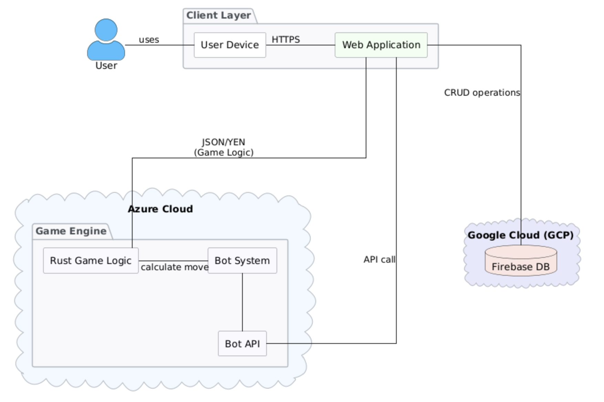
3.2.1. Mapping Input/Output to Channels
The following table maps the domain-specific inputs and outputs to their respective technical channels and protocols.
| Channel | Input | Output |
|---|---|---|
HTTPS (Browser → Webapp) |
User interactions: login, registration, move submissions, game start. |
Board state, game results, statistics, UI updates. |
HTTP/JSON (Webapp → Users API :3000) |
All API requests from the frontend (auth, game, moves). |
Responses proxied from the appropriate backend service. |
HTTP/JSON (Users API → Auth Engine :4001) |
Registration and login requests with user credentials. |
Session token, authentication result. |
HTTP/JSON (Users API → Game Manager :5000) |
Game creation requests, player move submissions. |
Match ID, updated board state, game outcome. |
HTTP/JSON (Game Manager → Gamey Engine :4000) |
Current board state (YEN notation), player move. |
Validated new state, win detection result, bot move. |
Redis Protocol (Game Manager → Redis :6379) |
Active match state writes on every move. |
Current match state reads for move processing. |
Firebase SDK (Auth Engine ↔ Firebase Auth) |
User credentials for registration and login. |
JWT token, user profile. |
Firestore SDK (Game Manager ↔ Firestore) |
Match results and player statistics on game end. |
Historical match data and global rankings. |
HTTPS (External Bot → Public API) |
Board state (YEN notation), strategy parameters. |
Bot move response in YEN notation. |
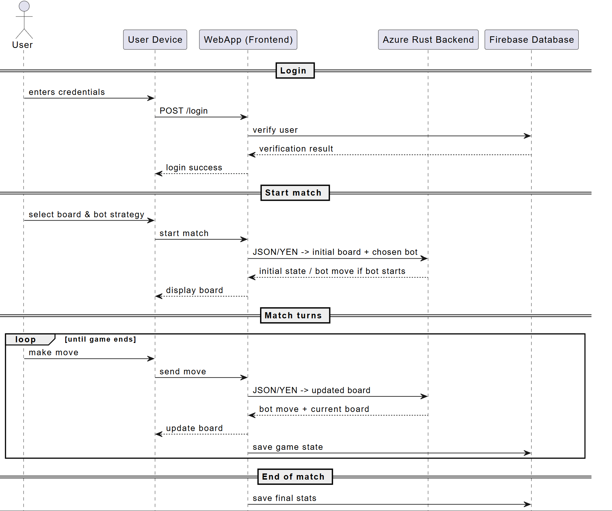
4. Solution Strategy
4.1. Technical Decisions
4.1.1. Frontend
-
The user interface is implemented using React with TypeScript, built with Vite. React’s component model allows us to organize and reuse UI elements efficiently, while TypeScript enforces type safety across the codebase.
4.1.2. Backend Services
The backend follows a microservices architecture with the following services:
-
Users Service (Node.js/Express): Acts as the central API gateway. All client requests go through this service, which proxies to the appropriate internal service. It also handles CSRF protection.
-
Auth Engine (Rust/Axum): A dedicated Rust microservice responsible for user registration, login, and token validation, backed by Firebase Auth.
-
Game Manager (Rust/Axum): Manages match lifecycle — game creation, move processing, and result persistence. Bridges Redis for active game state and Firestore for long-term storage.
-
Gamey Engine (Rust/Axum): The computational core. Implements game rules, win detection, and AI move generation. Written in Rust for maximum performance and determinism.
4.1.3. Data Storage
-
Firebase (Firestore + Auth): Chosen as the primary persistent data store for user accounts, match history, and global rankings. Fully managed with built-in authentication.
-
Redis: Used as an in-memory cache for active match state, providing low-latency reads and writes during gameplay.
4.1.4. Infrastructure
-
Docker & Docker Compose: Every service is containerized to ensure environment parity between development and production. A single
docker-compose.ymlorchestrates all services. -
Azure VM: The production deployment target. All containers run on a single Azure virtual machine at
20.250.145.156.
4.1.5. Monitoring & Quality
-
Prometheus + Grafana: The Users Service exposes metrics collected by Prometheus and visualized through Grafana dashboards for operational monitoring.
-
SonarCloud: Integrated into the CI/CD pipeline for static analysis, code quality gates, and coverage reporting.
4.2. Organizational Decisions
-
GitHub is used to manage the project, with branch protection rules ensuring every push to a main branch is reviewed by at least one other team member.
-
GitHub Actions automates the CI/CD pipeline: unit tests, E2E tests, Docker image builds, and deployment to Azure on each release.
-
GitHub Wiki is used to document team meetings and decisions.
4.3. Level 1
5. Building Block View
5.1. Whitebox Overall System
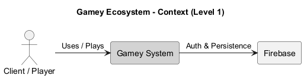
- Motivation
-
The system uses a hybrid backend approach. Firebase is used as a Third-Party Building Block to offload identity management and persistence. This allows the Gamey system to focus on custom business logic and the handle CPU-intensive game mechanics without managing user sessions directly.
- Contained Building Blocks
| Name | Responsibility |
|---|---|
Gamey System |
Custom and developed layers of the application with orchestrated services. |
Firebase |
External black box providing Authentication and cloud-based data storage. |
5.1.1. Gamey System
- Purpose/Responsibility
-
Coordinates the user experience and provides a single gateway that communicates the backend and frontend interfaces.
5.1.2. Firebase
- Purpose/Responsibility
-
Provides a secure and external layer for handling the Data Base.
5.1.3. Game Engine
- Purpose/Responsibility
-
The computational core. It is agnostic of user identity (delegated to other blocks) and focuses on the game rules.
5.2. Level 2
5.2.1. White Box Game Engine (Rust)
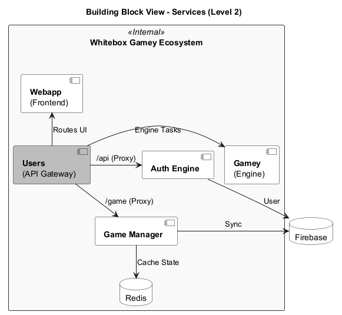
- Motivation
-
The Gamey System is decomposed into specialized services to ensure a clear separation of concerns. By utilizing a central Gateway (Users), the system provides a single entry point for the Webapp and API requests. This architecture isolates the Gamey Engine from session management, while Auth and Game Manager handle microservice-specific tasks, using Redis for high-speed state caching and Firebase for long-term persistence.
- Contained Building Blocks
| Name | Responsibility |
|---|---|
Users |
The central API Gateway that orchestrates and routes all incoming traffic to the appropriate internal services. |
Webapp |
The frontend user interface providing the visual representation of the game and user dashboard. |
Auth Engine |
Dedicated microservice that interacts with Firebase to manage user identity, tokens, and authentication flows. |
Game Manager |
Orchestration service responsible for handling match state, player matchmaking, and synchronizing data with Firebase. |
Gamey |
The core game engine service that executes game rules and handles CPU-intensive mechanics. |
Redis |
In-memory data store used for low-latency caching of active game states and temporary session data. |
Firebase |
Third-party platform providing robust authentication and cloud-hosted NoSQL data storage. |
5.3. Level 3
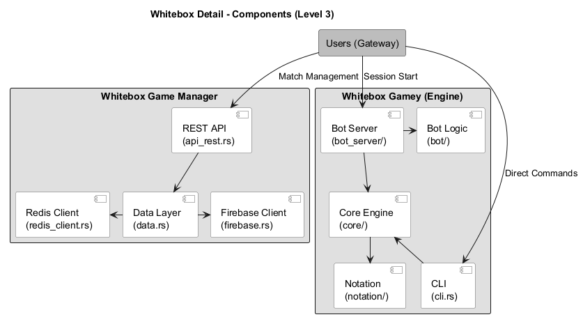
6. Whitebox Game Manager (Rust)
- Purpose/Responsibility
-
The Game Manager acts as the bridge between the high-level game requests and the data persistence layers. It translates business logic into actionable data operations across NoSQL and cache environments.
- Contained Building Blocks (Components)
| Name | Responsibility |
|---|---|
REST API (api_rest.rs) |
Exposes endpoints for match management and receives commands from the Gateway. |
Data Layer (data.rs) |
Contains the core business logic and decides whether to fetch data from cache or primary storage. |
Firebase Client (firebase.rs) |
Handles the low-level communication and serialization for Firebase Firestore and Auth. |
Redis Client (redis_client.rs) |
Manages the connection pool and CRUD operations for the volatile Redis cache. |
7. Whitebox Gamey Engine (Rust)
- Purpose/Responsibility
-
This is the computational heart of the ecosystem. It is designed to be highly modular, allowing for different interfaces (CLI or Bot Server) to interact with the same deterministic game logic.
- Contained Building Blocks (Components)
| Name | Responsibility |
|---|---|
Core Engine (core/) |
Implements the fundamental rules, state machine, and move validation of the game. |
Bot Server (bot_server/) |
A wrapper that allows the engine to be played against or by automated agents over a network. |
Bot Logic (bot/) |
Contains the algorithms and decision-making heuristics for AI players. |
Notation (notation/) |
Handles the parsing and generation of game-specific notation (e.g., FEN or PGN equivalents). |
CLI (cli.rs) |
Provides a command-line interface for direct interaction with the engine for debugging or standalone play. |
8. Runtime View
The runtime view describes concrete behavior and interactions of the system’s building blocks in form of scenarios.
You should understand how building blocks of your system perform their job and communicate at runtime.
8.1. User Creation
This scenario describes the registration of a new player. The Users Gateway receives the initial request and delegates the registration logic to the Auth Engine, which ensures the user is correctly persisted in the Firebase database.
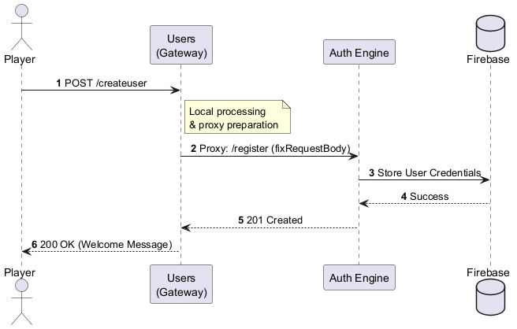
8.2. User Login
The login process emphasizes security by requiring a CSRF token validation at the Gateway level before any authentication logic is processed by the Auth Engine.
CSRF Check: The Gateway compares the X-CSRF-Token header against the secure csrf_token cookie.
Proxying: Upon validation, the request is proxied to the Auth service using fixRequestBody to maintain data integrity.
External Auth: The Auth Engine verifies the credentials against Firebase to grant access.
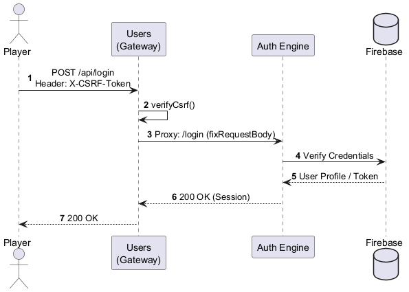
8.3. Match Creation
This view illustrates how the system initializes a game session. The Users Gateway routes the request to the Game Manager, which prepares the environment for a new match.
Resource Allocation: The Game Manager creates a unique match ID.
Fast Persistence: The initial state is stored in Redis to allow for high-frequency updates during gameplay.
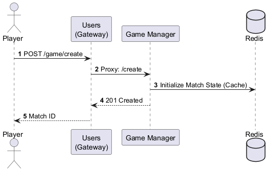
8.4. Player Move
The player move scenario represents the core interactive loop of the application. It involves real-time validation and state synchronization across the engine and the cache.
State Retrieval: The Game Manager pulls the current board status from Redis.
Engine Validation: The Gamey Engine processes the move logic to ensure it follows game rules.
Cache Update: The new state is pushed back to Redis for immediate availability.
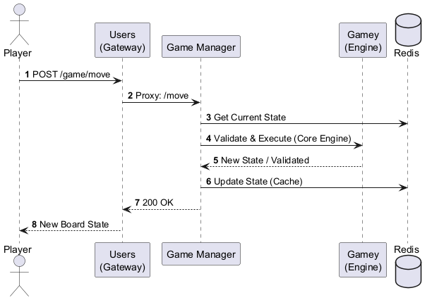
8.5. Bot Move
This scenario covers automated gameplay. It is typically triggered internally by the Game Manager once a player’s turn is completed.
Decision Making: The Bot Logic within the Engine calculates the optimal response.
Asynchronous Sync: The resulting state is synchronized with the Redis cache so the player sees the bot’s reaction upon their next refresh or through a socket.
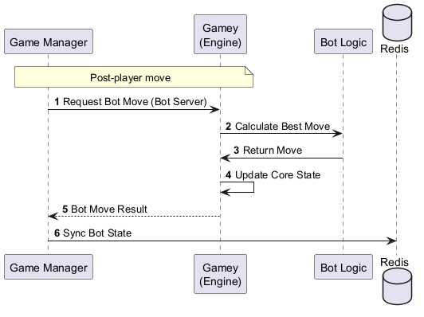
9. Deployment View
9.1. Infrastructure Level 1
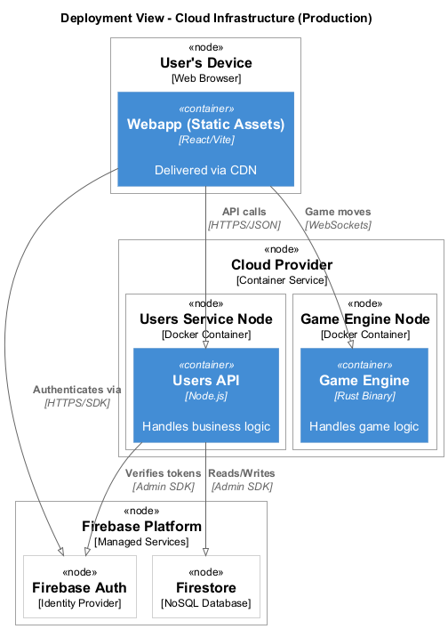
- Motivation
-
The system is fully containerized using Docker, orchestrated via
docker-compose.yml. All backend services run on a single Azure VM (20.250.145.156). Firebase is used as a managed external platform for authentication and persistence, reducing infrastructure overhead. - Quality and/or Performance Features
-
-
Containerization: Every service runs in an isolated Docker container, ensuring consistent behavior across development and production.
-
Separation of concerns: The Users API acts as a single entry point, hiding the internal service topology from external clients.
-
Low-latency state management: Redis caches active game states, enabling fast move validation without hitting Firebase on every request.
-
Managed auth and persistence: Firebase offloads identity management and long-term data storage, reducing the attack surface of the self-hosted infrastructure.
-
- Mapping of Building Blocks to Infrastructure
| Building Block | Infrastructure Element |
|---|---|
Webapp |
Docker container serving the compiled React/Vite SPA on port 80. |
Users API |
Docker container running the Node.js/Express gateway on port 3000. |
Auth Engine |
Docker container running the Rust/Axum authentication service on port 4001. |
Game Manager |
Docker container running the Rust/Axum game state manager on port 5000. |
Gamey Engine |
Docker container running the Rust/Axum game engine and bot service on port 4000. |
Redis |
Docker container running Redis for in-memory game state caching on port 6379. |
Firebase Auth + Firestore |
Fully managed by Google Cloud (Firebase Platform). No self-hosted component. |
9.2. Infrastructure Level 2
9.2.1. Docker Environment
Each service is defined as a container in docker-compose.yml and shares a common internal Docker network, allowing inter-service communication by service name.
Webapp:
-
Runtime: Node.js (build stage), Nginx or static file server for the compiled output.
-
Build Args:
VITE_API_URLandVITE_GAMEMANAGER_URLare injected at build time. -
Port: Exposes 80 (HTTPS via reverse proxy in production).
Users API:
-
Runtime: Node.js 22.
-
Config: Environment variables for Firebase Admin credentials and internal service URLs (
AUTH_URL,GAMEMANAGER_URL,GAMEY_URL). -
Port: Exposes 3000 (REST API gateway).
Auth Engine:
-
Runtime: Compiled Rust binary on a minimal base image.
-
Config:
FIREBASE_PROJECT_IDandFIREBASE_CREDENTIALS_B64for Firebase Admin SDK. -
Port: Exposes 4001.
Game Manager:
-
Runtime: Compiled Rust binary on a minimal base image.
-
Config: Firebase credentials and
REDIS_HOSTfor Redis connectivity. -
Port: Exposes 5000.
Gamey Engine:
-
Runtime: Compiled Rust binary on a minimal base image.
-
Performance: Built with release optimizations (LTO) for maximum throughput.
-
Port: Exposes 4000.
Redis:
-
Runtime: Official Redis image.
-
Persistence: Volume-mounted data directory to survive container restarts.
-
Port: Exposes 6379 (internal network only).
10. Cross-cutting Concepts
This section describes overall, principal regulations and solution ideas that are relevant in multiple parts (= cross-cutting) of your system. Such concepts are often related to multiple building blocks. They can include many different topics, such as
-
models, especially domain models
-
architecture or design patterns
-
rules for using specific technology
-
principal, often technical decisions of an overarching (= cross-cutting) nature
-
implementation rules
Concepts form the basis for conceptual integrity (consistency, homogeneity) of the architecture. Thus, they are an important contribution to achieve inner qualities of your system.
Some of these concepts cannot be assigned to individual building blocks, e.g. security or safety.
The form can be varied:
-
concept papers with any kind of structure
-
cross-cutting model excerpts or scenarios using notations of the architecture views
-
sample implementations, especially for technical concepts
-
reference to typical usage of standard frameworks (e.g. using Hibernate for object/relational mapping)
A potential (but not mandatory) structure for this section could be:
-
Domain concepts
-
User Experience concepts (UX)
-
Safety and security concepts
-
Architecture and design patterns
-
"Under-the-hood"
-
development concepts
-
operational concepts
Note: it might be difficult to assign individual concepts to one specific topic on this list.

See Concepts in the arc42 documentation.
10.1. Domain Model: YEN Notation
The core domain concept is the YEN Notation. To ensure all components (Frontend, Gateway, and Engine) communicate seamlessly, a standardized JSON format has been established. This format describes the hexagonal board, edge connections, and the current turn, preventing logical interpretation errors when passing data between JavaScript and Rust environments.
10.2. Security: Layered Authentication and CSRF
Security is implemented across two main layers: * Identity: Delegated to Firebase Auth for robust JWT token management. * Session Integrity: The Users Gateway enforces Cross-Site Request Forgery (CSRF) protection using validated tokens for every state-changing request, securing player actions and statistics.
10.3. Persistency: Hybrid State Management
The system distinguishes between two data lifecycles: * Volatile State (Real-time): Managed by Redis for active matches where low latency is critical. * Persistent State: Managed by Firebase/Firestore for long-term storage of user profiles, match history, and global rankings.
10.4. Deterministic Logic (Rust Engine)
Since Game Y requires complex graph pathfinding to detect wins, all computational logic is centralized in Rust. This ensures that rules are applied deterministically and with maximum CPU efficiency, regardless of whether the move comes from the Web UI or the Bot API.
10.5. Deployment: Containerization (Docker)
To ensure "it works on my machine" consistency, every sub-service is encapsulated in a Docker container. This cross-cutting concept simplifies local development and cloud deployment, ensuring identical runtimes for the Node.js gateway and the compiled Rust binary.
11. Architecture Decisions
This section documents the most important architectural decisions made during the development of the system. Each decision includes its context, the chosen option, and the rationale.
11.1. ADR-001: Separation into Web Application and Rust Game Engine
Status: Accepted
Context: The assignment requires the system to be composed of at least two subsystems: - A web application implemented in TypeScript. - A game logic module implemented in Rust.
Decision: The system will follow a service-oriented architecture where: - The web application handles the user interface, API, and user management. - The Rust module provides game logic (win detection and move suggestion) through a web service.
Rationale: - Required by the assignment. - Separates concerns between UI and game logic. - Rust provides high performance for algorithmic computations.
Consequences: - Requires inter-service communication via HTTP and JSON. - Adds deployment and integration complexity.
11.2. ADR-002: Communication via JSON using YEN Notation
Status: Accepted
Context: The assignment specifies that both subsystems must communicate using JSON messages following YEN notation.
Decision: All communication between the web application and the Rust service will use: - HTTP requests - JSON payloads - YEN notation for game states
Rationale: - Mandatory requirement from the assignment. - JSON is simple, widely supported, and easy to debug.
Consequences: - Both services must implement serialization and validation of YEN data. - Changes to the notation would affect both subsystems.
11.3. ADR-003: Use of Firebase as the Database
Status: Accepted
Context: The system requires user registration, match history, and statistics storage.
Possible options: - Self-hosted database (PostgreSQL, MySQL) - Managed cloud database - Firebase
Decision: Use Firebase as the main data storage solution.
Rationale: - Fully managed service with minimal setup. - Built-in authentication and real-time database features. - Reduces infrastructure and maintenance effort. - Suitable for small-to-medium academic projects.
Consequences: - Vendor lock-in to Firebase ecosystem. - Limited flexibility compared to self-hosted databases. - Requires internet connectivity for all operations.
11.4. ADR-004: Cloud Deployment of the Application
Status: Accepted
Context: The assignment requires the system to be publicly accessible via the web.
Possible hosting options: - Local/on-premise server - Traditional VM hosting - Cloud platform (Vercel, Railway, Azure)
Decision:
Deploy all services on an Azure Virtual Machine (20.250.145.156), running the full docker-compose.yml stack.
Rationale: - Azure provides a reliable, always-on VM suitable for running multiple Docker containers simultaneously. - A single VM with Docker Compose is simpler to manage for a university project than a managed container orchestration platform. - Meets the public deployment and accessibility requirements. - Enables CI/CD with automated deployment via GitHub Actions SSH.
Consequences: - All services share the resources of a single VM (no auto-scaling). - Deployment is triggered automatically on each GitHub release via an SSH deploy step in the CI pipeline. - Firebase credentials and other secrets are managed through GitHub Actions secrets and passed as environment variables at runtime.
11.5. ADR-005: External REST API for Bots
Status: Accepted
Context: The assignment requires an API that allows external bots to interact with the system and play games.
Decision: Expose a REST-style HTTP API that: - Accepts JSON requests. - Uses YEN notation for game state. - Provides endpoints for game interaction.
Rationale: - REST is simple and widely supported. - Easy integration with external bots. - Matches the JSON communication requirement.
Consequences: - Requires proper authentication and validation. - Must be fully documented.
12. Quality Requirements
12.1. Quality Tree
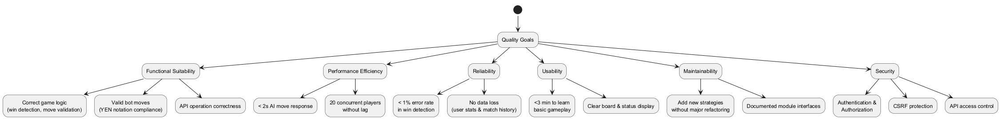
Explanation: This quality tree is structured from ISO 25010-inspired categories. Each main branch (Functional, Performance, etc.) links to more concrete sub-goals, which are then detailed in the scenarios below.
12.2. Quality Scenarios
| Quality Attribute | Scenario | Stimulus | Environment | Response | Metric / Success Criteria |
|---|---|---|---|---|---|
Functional Suitability |
Correct game logic |
A player makes a move |
Web frontend or bot API |
The system updates the board and verifies the win condition |
Must correctly determine game state |
Functional Suitability |
API operation correctness |
External bot calls the 'play' endpoint |
System running normally |
System returns next move in YEN notation |
Response contains valid move; no invalid game states |
Performance Efficiency |
Fast move computation |
Player requests next move |
Normal load (~1 concurrent player) |
System calculates AI move |
Response returned within 1 second |
Performance Efficiency |
Handle concurrency |
Multiple users/bots interact simultaneously |
Normal server load |
System serves all requests |
20 concurrent matches without noticeable lag |
Reliability |
Accurate game outcome |
Match completes |
Normal operation |
System records winner/loser correctly |
<1% error rate in win detection or move suggestion |
Reliability |
Data persistence |
Unexpected restart or refresh |
Web app and backend running |
User stats and match history retained |
No loss of game or user data |
Usability |
Learnability |
New user starts first game |
First-time user accesses web frontend |
User can complete a match |
Game completed without external help; <30 min to understand basic rules |
Usability |
Board clarity |
Player observes board and options |
Normal gameplay |
Actions and current game state are clearly displayed |
User can easily understand current turn, available moves, and game status |
Maintainability |
Extend AI strategies |
Developers add new AI strategy or difficulty |
Source code maintained and documented |
System integrates new strategy without breaking existing features |
Minimal code changes needed; no regression errors |
Maintainability |
Clear module interfaces |
Developers modify Rust module or frontend |
Existing system deployed |
Interfaces documented; components interact correctly |
Changes localized; integration works without extensive refactoring |
Security |
Authentication |
User logs in |
Public internet |
System verifies credentials |
Unauthorized access denied; valid users granted access |
Security |
API protection |
External bot tries to call API |
System exposed to network |
API checks credentials and permissions |
Unauthorized requests blocked; only authorized clients allowed |
13. Risks and Technical Debts
13.1. Technical Risks
| Risk | Impact | Mitigation |
|---|---|---|
Data Consistency |
Potential desync between Redis (volatile) and Firebase (persistent). |
Implement robust write-behind patterns and retry logic. |
JS Performance |
Real-time processing lag in the browser client. |
Optimize event loop and use Web Workers for networking. |
Rust Complexity |
Steep learning curve affecting development velocity. |
Peer programming and strict linting (clippy). |
13.2. Technical Debts
| Technical Debt | Status/Context | Priority |
|---|---|---|
Session Reload |
Currently marked as invalid; needs architectural fix. |
High |
End-to-End (e2e) |
Missing automated test suite for game flows. |
Medium |
Code Duplication |
Identified logic redundancy across modules. |
Low |
Deployment Structure |
Incomplete definition of the production pipeline. |
High |
14. Glossary
| Term | Definition |
|---|---|
Bot API |
Public interface allowing external automated agents to interact with the game, request moves, and query game states over HTTPS. |
Docker |
Containerization platform used to package services (Users Service, Gamey Engine) ensuring consistent execution across different hardware and environments. |
Firebase |
Cloud platform providing Authentication and NoSQL persistence (Firestore) for user profiles, match history, and global statistics. |
Gamey Engine |
The core computational module written in Rust, responsible for deterministic game logic, win detection, and AI move generation. |
Gateway |
Node.js service acting as the primary entry point for user-related requests, handling authentication and CSRF protection. |
Redis |
In-memory data store used as a high-performance cache to manage active game states and reduce latency. |
Rust |
High-performance systems programming language used for the game’s core logic and AI algorithms to ensure computational efficiency. |
YEN Notation |
Project-specific JSON-based format used for serializing board states and moves between the frontend and backend subsystems. |
About arc42
arc42, the template for documentation of software and system architecture.
Template Version 8.2 EN. (based upon AsciiDoc version), January 2023
Created, maintained and © by Dr. Peter Hruschka, Dr. Gernot Starke and contributors. See https://arc42.org.